The Rotational Performance Index quiz, start to result
Phone shots are 390 wide, captured at 2x. Desktop shots are 1280 wide. The visitor page has no dark mode: the quiz section is always light.
01-quiz-intro
The visitor lands on the quiz page, reads what the quiz is about and taps Start.
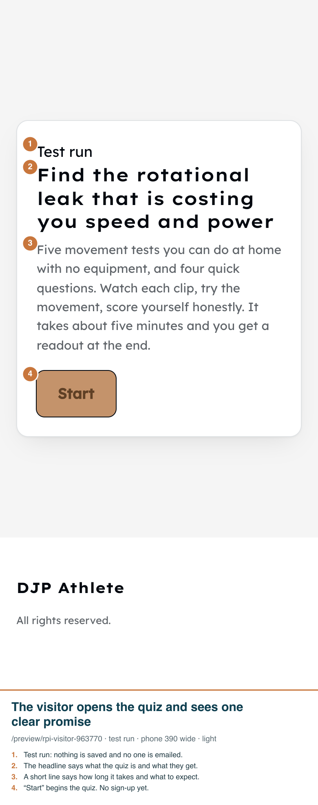
02-sport-router-question
The visitor picks their sport. This decides which sport-specific questions come next.
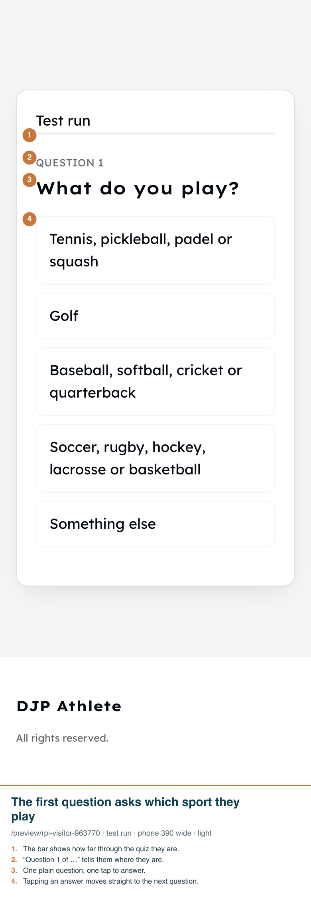
03-movement-question-demo-clip
The visitor watches the demo clip, reads the three things to hold, then taps how many they managed.
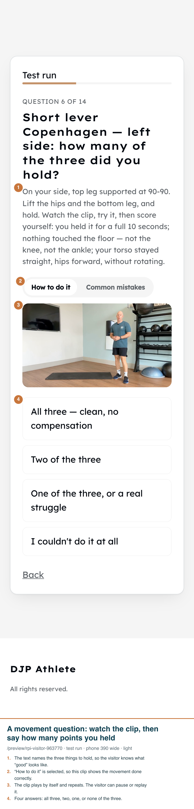
04-common-mistakes-clip
The visitor taps “Common mistakes” and the clip changes to show what to avoid.
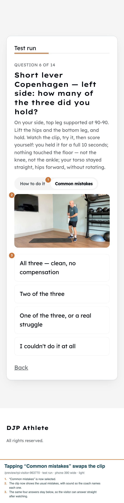
05-second-side-of-the-test
The visitor does the same test on the other side and answers again. Left and right are scored separately.
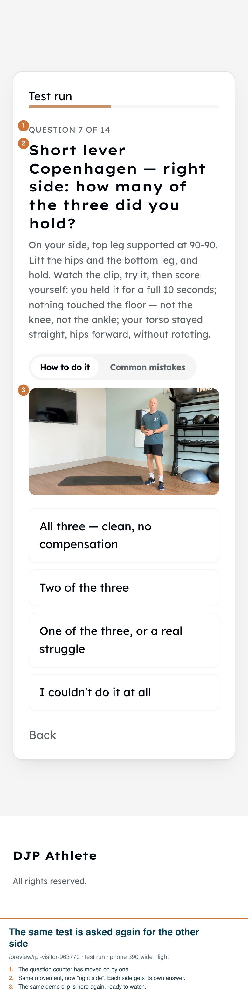
06-self-report-question
The visitor answers a question about how their body feels. Their answer counts toward the score.
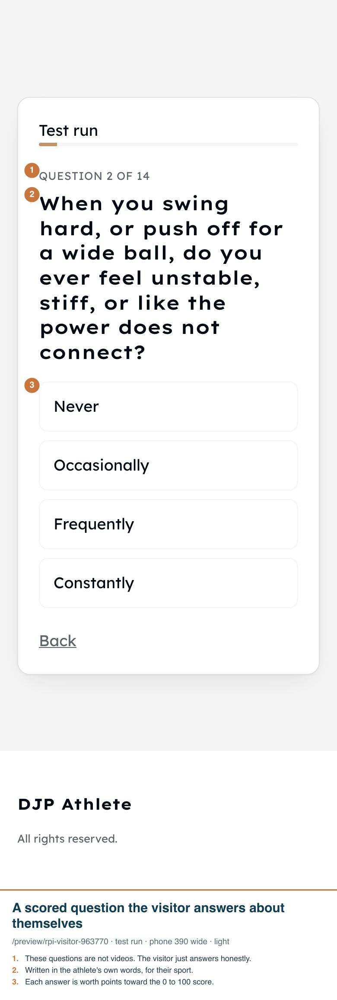
07-email-gate
The visitor enters their name and email and agrees to be contacted, then taps the button to see the result.
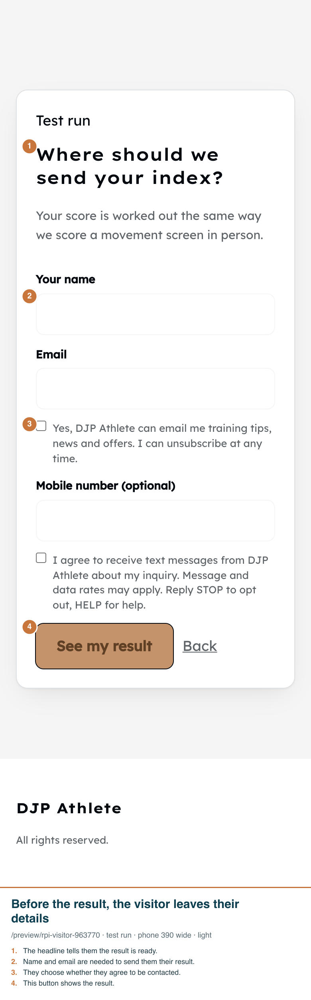
08-result-lopsided
The visitor sees their score, what they told us, a movement map with the gap flagged, and a plain explanation.
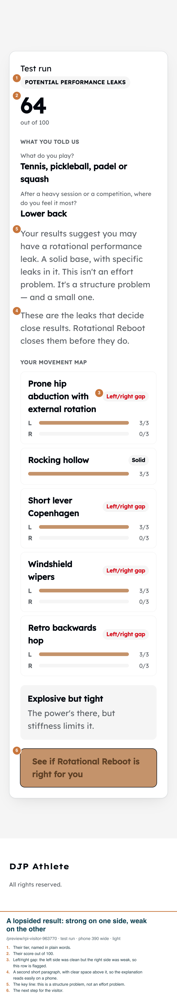
09-result-strong
A visitor who held every movement on both sides sees a high score and a clean map.
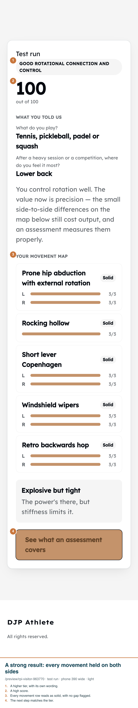
10-desktop-result-lopsided
The same lopsided result in the wider computer layout.
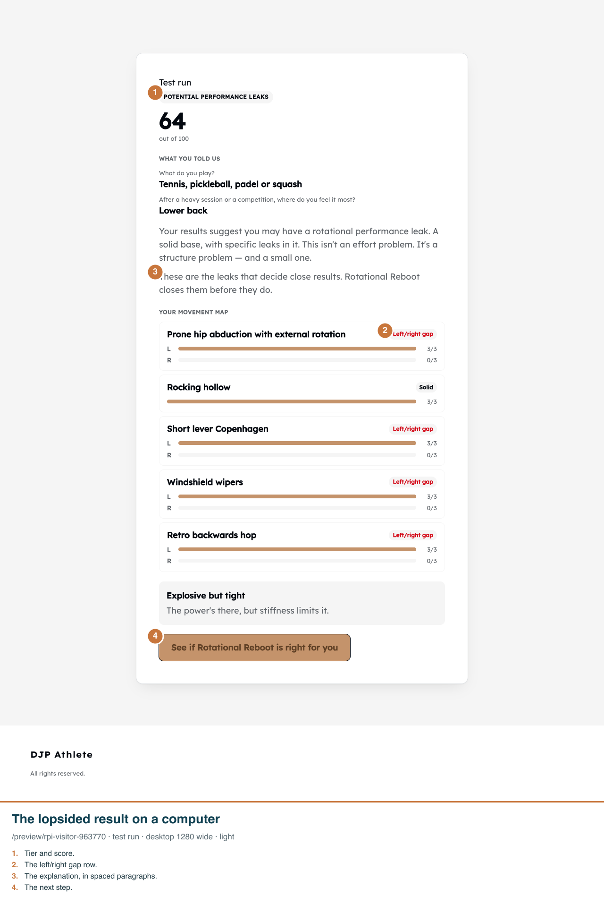
11-desktop-movement-question
On a computer the visitor sees the same question, clip, toggle and answers in a wider layout.
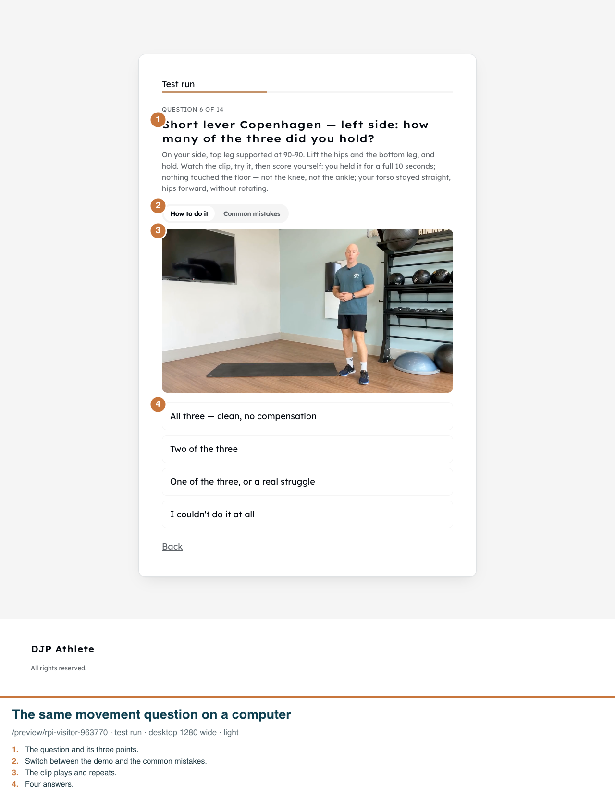